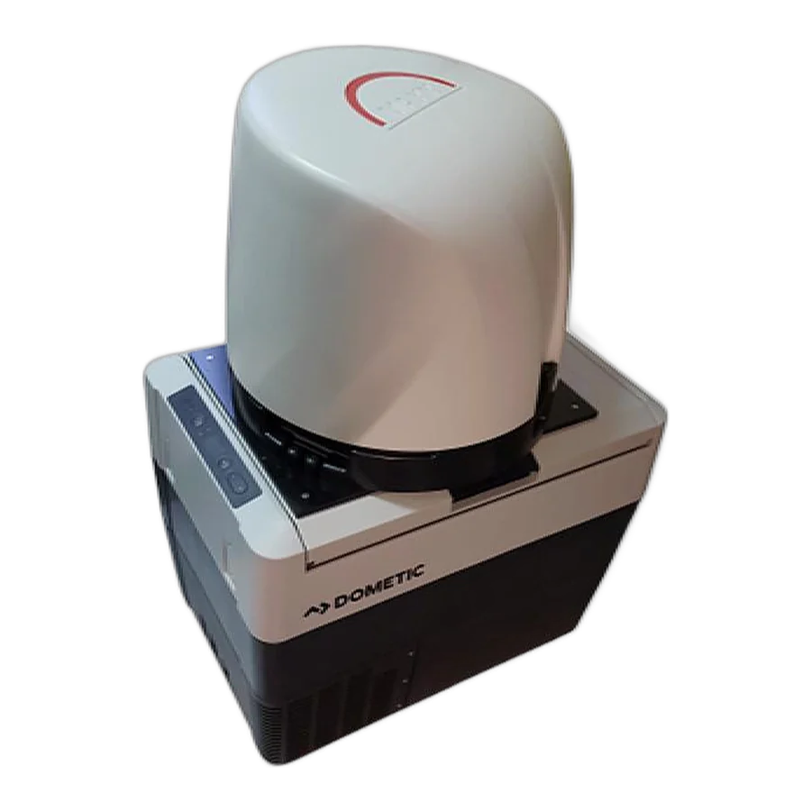

Préleveurs · Portables
MAXX P6Préleveur portable compact, pompe à vide ou péristaltique
Le préleveur portable léger et compact pour échantillonner en de multiples endroits. Quatre versions : pompe à vide ou péristaltique, mono-flacon ou multi-flacons. La tête seule se monte aussi sur une glacière réfrigérée.
- Poids
- Environ 9 à 15 kg
- Pompage
- À vide ou péristaltique
- Volume
- 20 ml à 10 l selon la pompe
- Autonomie
- Jusqu’à 1 300 échantillons
Idéal pour
- Campagnes de mesure
- Multiples points
- Réseaux d’assainissement
- Asservissement au débit
- Prélèvement sur alarme
LeasingDisponible à l’achat ou en leasing, par mensualités. Comment ça marche
Points forts
Léger, maniable et simple d’emploi : le préleveur qui se déplace d’un point à l’autre.
- Quatre versionsPompe à vide ou péristaltique, mono-flacon (MINIMAXX) ou multi-flacons (P6 L).
- Léger et compactEnviron 9 kg en mono-flacon, 15 kg en multi-flacons.
- Accès immédiatBatterie et pompe faciles d’accès.
- Asservi au débit ou à un contactDétection de niveau, alarme de débit, alarme de polluant.
- Grande autonomieJusqu’à 1 300 échantillons par charge avec la pompe à vide.
- Version glacièreTête montée sur glacière pour un préleveur réfrigéré mono-flacon.
Principe de mesure
Le MAXX P6 prélève à intervalle de temps, en fonction du débit ou sur événement. Asservi à un débitmètre, il prélève un échantillon à chaque volume écoulé : l’échantillon moyen représente fidèlement la charge de la journée.
Deux pompes au choix : à vide (20 à 350 ml, précision < 2,5 % ou ± 3 ml) ou péristaltique (20 ml à 10 l, ± 5 % ou ± 5 ml). 12 programmes utilisateur, prélèvement en fonction du temps, du débit ou d’un événement, et prélèvement manuel à tout moment sans interrompre le programme.
- De 1 à 999 échantillons par flacon
- Hauteur d’aspiration de 6,5 m, 8 m en option
- Tuyau jusqu’à 30 m
Applications
Pour les échantillonnages d’eaux usées en de multiples endroits.
- Campagnes en réseauPrélèvements sur plusieurs points successifs.
- Bilans 24 hPrélèvements asservis au débitmètre.
- Surveillance de rejetsPrélèvement déclenché par une alarme de polluant ou de débit.
- Contrôles ponctuelsMise en œuvre rapide, matériel léger.
Caractéristiques
Valeurs selon la version : MINIMAXX (mono-flacon) ou P6 L (multi-flacons).
| Pompe à vide | 20 à 350 ml, < 2,5 % ou ± 3 ml, 15 VA, 1 300 échantillons par charge |
|---|---|
| Pompe péristaltique | 20 à 10 000 ml, ± 5 % ou ± 5 ml, 70 VA, 550 échantillons par charge |
| Hauteur d’aspiration | 6,5 m, jusqu’à 8 m en option |
| Tuyau | PVC, 5 m, Ø intérieur 10 mm, lest inox ; 30 m au maximum |
| Intervalle | 1 min à 99 h 59 min |
| Asservissement | 1 à 9 999 impulsions par échantillon |
| Enveloppe | ABS et PP, compartiment échantillons à double paroi isolée |
|---|---|
| Flacons MINIMAXX | 1 × 10 l PE en standard, 1 × 4 l verre en option |
| Flacons P6 L | 24 × 1 l PE en standard ; 1 × 10 l, 4 × 4 l, 8 × 2 l PE ; 24 × 350 ml, 12 × 950 ml, 8 × 2 l verre |
| Alimentation | Batterie 12 V 7,5 Ah intégrée, bloc secteur en option |
| Entrées | 4-20 mA, contact volume, contact événement |
| Poids | Environ 9 kg (MINIMAXX) · 15 kg (P6 L) |
| Température | Ambiante 0 à 50 °C, effluent 0 à 40 °C |
Téléchargements
Questions fréquentes
Les questions que nous posent le plus souvent les exploitants et les bureaux d’études.
Pompe à vide ou péristaltique : laquelle choisir ?
La pompe à vide est économe (1 300 échantillons par charge) et précise sur les petits volumes. La pompe péristaltique prélève de 20 ml à 10 l.
Quelle différence entre MINIMAXX et P6 L ?
Le MINIMAXX est la version compacte mono-flacon ; le P6 L est la version multi-flacons, jusqu’à 24 flacons.
Peut-on le réfrigérer ?
La tête seule se monte sur une glacière réfrigérée pour constituer un préleveur portable mono-flacon réfrigéré.
Sur quels signaux peut-il prélever ?
Sur les impulsions ou le 4-20 mA d’un débitmètre, ou sur un contact : détection de niveau, alarme de débit, alarme de polluant.